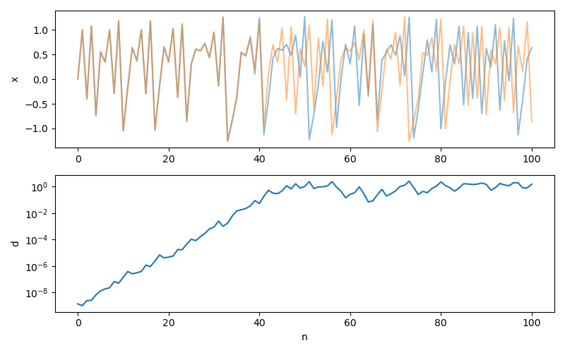
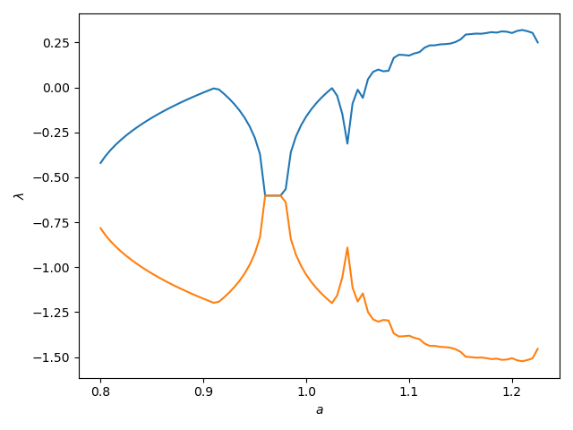

Lyapunov Exponents
Lyapunov exponents measure exponential rates of separation of nearby trajectories in the flow of a dynamical system. The Wikipedia and the Scholarpedia entries have a lot of valuable information about the history and usage of these quantities.
This page treats systems where the equations of motion are known. If instead you have numerical data, see numericallyapunov.
Notice that the performance of functions that use ContinuousDynamicalSystems depend crucially on the chosen solver. Please see the documentation page on Choosing a solver for an in-depth discussion.
Concept of the Lyapunov exponent
Before providing the documentation of the offered functionality, it is good to demonstrate exactly what are the Lyapunov exponents.
For chaotic systems, nearby trajectories separate in time exponentially fast (while for stable systems they come close exponentially fast). This happens at least for small separations, and is demonstrated in the following sketch:
 .
.
In this sketch $\lambda$ is the maximum Lyapunov exponent (and in general a system has as many exponents as its dimensionality).
Let's demonstrate these concepts using a real system, the Henon map:
Let's get a trajectory
using DynamicalSystems, PyPlot
henon = Systems.henon()
tr1 = trajectory(henon, 100)
summary(tr1)"2-dimensional Dataset{Float64} with 101 points"and create one more trajectory that starts very close to the first one
u2 = get_state(henon) + (1e-9 * ones(dimension(henon)))
tr2 = trajectory(henon, 100, u2)
summary(tr2)"2-dimensional Dataset{Float64} with 101 points"We now want to demonstrate how the distance between these two trajectories increases with time:
using LinearAlgebra: norm
figure(figsize=(8,5))
# Plot the x-coordinate of the two trajectories:
ax1 = subplot(2,1,1)
plot(tr1[:, 1], alpha = 0.5)
plot(tr2[:, 1], alpha = 0.5)
ylabel("x")
# Plot their distance in a semilog plot:
ax2 = subplot(2,1,2, sharex = ax1)
d = [norm(tr1[i] - tr2[i]) for i in 1:length(tr2)]
ylabel("d"); xlabel("n"); semilogy(d);
The initial slope of the d vs n plot (before the curve saturates) is approximately the maximum Lyapunov exponent!
Lyapunov Spectrum
The function lyapunovs calculates the entire spectrum of the Lyapunov exponents of a system:
ChaosTools.lyapunovs — Functionlyapunovs(ds::DynamicalSystem, N [, k::Int | Q0]; kwargs...) -> λsCalculate the spectrum of Lyapunov exponents [Lyapunov1992] of ds by applying a QR-decomposition on the parallelepiped matrix N times. Return the spectrum sorted from maximum to minimum.
The third argument k is optional, and dictates how many lyapunov exponents to calculate (defaults to dimension(ds)). Instead of passing an integer k you can pass a pre-initialized matrix Q0 whose columns are initial deviation vectors (then k = size(Q0)[2]).
Keyword Arguments
u0 = get_state(ds): State to start from.Ttr = 0: Extra "transient" time to evolve the system before application of the algorithm. Should beIntfor discrete systems. Both the system and the deviation vectors are evolved for this time.dt = 1: Time of individual evolutions between successive orthonormalization steps. For continuous systems this is approximate.diffeq...: Keyword arguments propagated intoinitof DifferentialEquations.jl. Seetrajectoryfor examples. Only valid for continuous systems.
Description
The method we employ is "H2" of [Geist1990], originally stated in [Benettin1980]. The deviation vectors defining a D-dimensional parallepiped in tangent space are evolved using the tangent dynamics of the system. A QR-decomposition at each step yields the local growth rate for each dimension of the parallepiped. The growth rates are then averaged over N successive steps, yielding the lyapunov exponent spectrum (at each step the parallepiped is re-normalized).
Performance Notes
This function uses a tangent_integrator. For loops over initial conditions and/or parameter values one should use the low level method that accepts an integrator, and reinit! it to new initial conditions. See the "advanced documentation" for info on the integrator object. The low level method is
lyapunovs(tinteg, N, dt::Real, Ttr::Real)If you want to obtain the convergence timeseries of the Lyapunov spectrum, use the method
ChaosTools.lyapunovs_convergence(tinteg, N, dt, Ttr)(not exported).
As you can see, the documentation string is detailed and self-contained. For example, the Lyapunov spectrum of the folded towel map is calculated as:
using DynamicalSystems
ds = Systems.towel()
λλ = lyapunovs(ds, 10000)3-element Array{Float64,1}:
0.43240930522213433
0.3721773634212749
-3.296958962934722Similarly, for a continuous system, e.g. the Lorenz system, you would do:
lor = Systems.lorenz(ρ = 32.0) #this is not the original parameter!
λλ = lyapunovs(lor, 10000, dt = 0.1)3-element Array{Float64,1}:
0.9881492815070998
-0.0009001543936533155
-14.65389696421011lyapunovs is also very fast:
using BenchmarkTools
ds = Systems.towel()
@btime lyapunovs($ds, 2000); 237.226 μs (45 allocations: 4.27 KiB)Here is an example of plotting the exponents of the Henon map for various parameters:
using DynamicalSystems, PyPlot
he = Systems.henon()
as = 0.8:0.005:1.225; λs = zeros(length(as), 2)
for (i, a) in enumerate(as)
set_parameter!(he, 1, a)
λs[i, :] .= lyapunovs(he, 10000; Ttr = 500)
end
figure()
plot(as, λs); xlabel("\$a\$"); ylabel("\$\\lambda\$")
Maximum Lyapunov Exponent
It is possible to get only the maximum Lyapunov exponent simply by giving 1 as the third argument of lyapunovs. However, there is a second algorithm that allows you to do the same thing, which is offered by the function lyapunov:
ChaosTools.lyapunov — Functionlyapunov(ds::DynamicalSystem, Τ; kwargs...) -> λCalculate the maximum Lyapunov exponent λ using a method due to Benettin [Benettin1976], which simply evolves two neighboring trajectories (one called "given" and one called "test") while constantly rescaling the test one. T denotes the total time of evolution (should be Int for discrete systems).
Keyword Arguments
Ttr = 0: Extra "transient" time to evolve the trajectories before starting to measure the expontent. Should beIntfor discrete systems.d0 = 1e-9: Initial & rescaling distance between the two neighboring trajectories.upper_threshold = 1e-6: Upper distance threshold for rescaling.lower_threshold = 1e-12: Lower distance threshold for rescaling (in order to be able to detect negative exponents).dt = 1: Time of evolution between each check of distance exceeding the thresholds. For continuous systems this is approximate.inittest = (u1, d0) -> u1 .+ d0/sqrt(D): A function that given(u1, d0)initializes the test state with distanced0from the given stateu1(Dis the dimension of the system). This function can be used when you want to avoid the test state appearing in a region of the phase-space where it would have e.g. different energy or escape to infinity.diffeq...: Keyword arguments propagated intoinitof DifferentialEquations.jl. Seetrajectoryfor examples. Only valid for continuous systems.
Description
Two neighboring trajectories with initial distance d0 are evolved in time. At time $t_i$ their distance $d(t_i)$ either exceeds the upper_threshold, or is lower than lower_threshold, which initializes a rescaling of the test trajectory back to having distance d0 from the given one, while the rescaling keeps the difference vector along the maximal expansion/contraction direction: $u_2 \to u_1+(u_2−u_1)/(d(t_i)/d_0)$.
The maximum Lyapunov exponent is the average of the time-local Lyapunov exponents
Performance Notes
This function uses a parallel_integrator. For loops over initial conditions and/or parameter values one should use the low level method that accepts an integrator, and reinit! it to new initial conditions. See the "advanced documentation" for info on the integrator object. The low level method is
lyapunov(pinteg, T, Ttr, dt, d0, ut, lt)For example:
using DynamicalSystems, PyPlot
henon = Systems.henon()
λ = lyapunov(henon, 10000, d0 = 1e-7, upper_threshold = 1e-4, Ttr = 100)0.42018736282059616The same is done for continuous systems:
lor = Systems.lorenz(ρ = 32)
λ = lyapunov(lor, 10000.0, dt = 10.0, Ttr = 100.0)0.992726492114718- Lyapunov1992A. M. Lyapunov, The General Problem of the Stability of Motion, Taylor & Francis (1992)
- Geist1990K. Geist et al., Progr. Theor. Phys. 83, pp 875 (1990)
- Benettin1980G. Benettin et al., Meccanica 15, pp 9-20 & 21-30 (1980)
- Benettin1976G. Benettin et al., Phys. Rev. A 14, pp 2338 (1976)